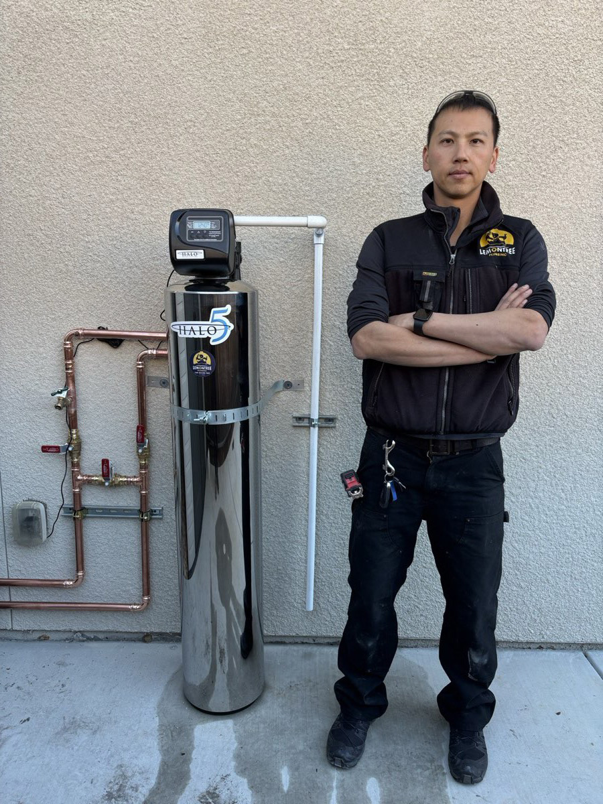
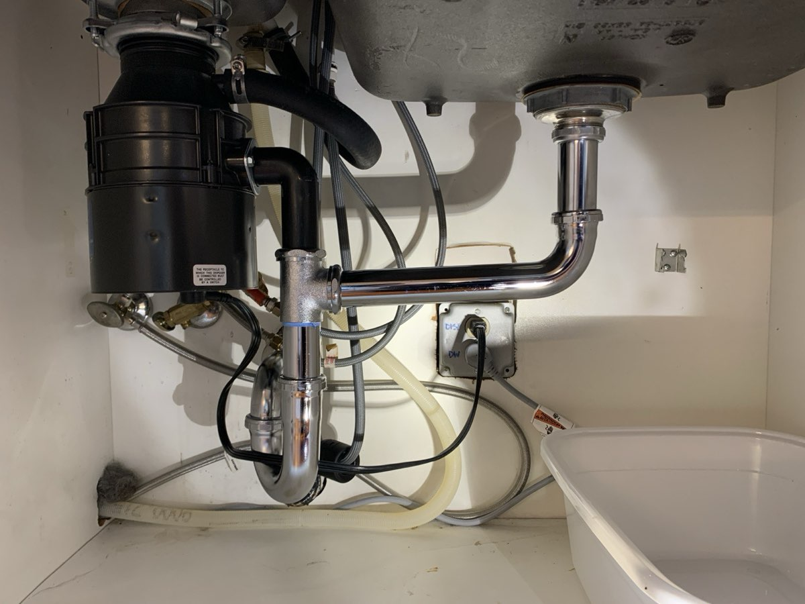
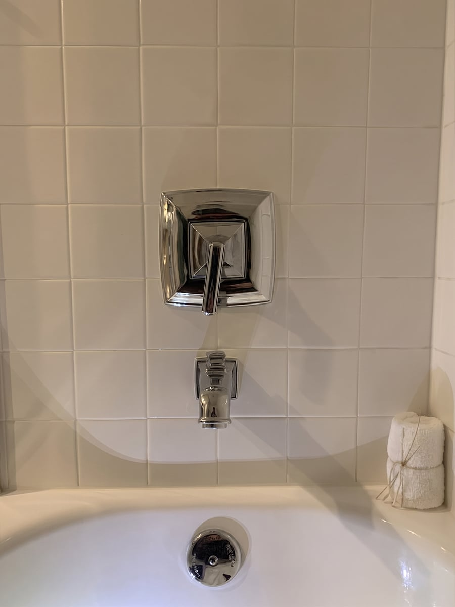
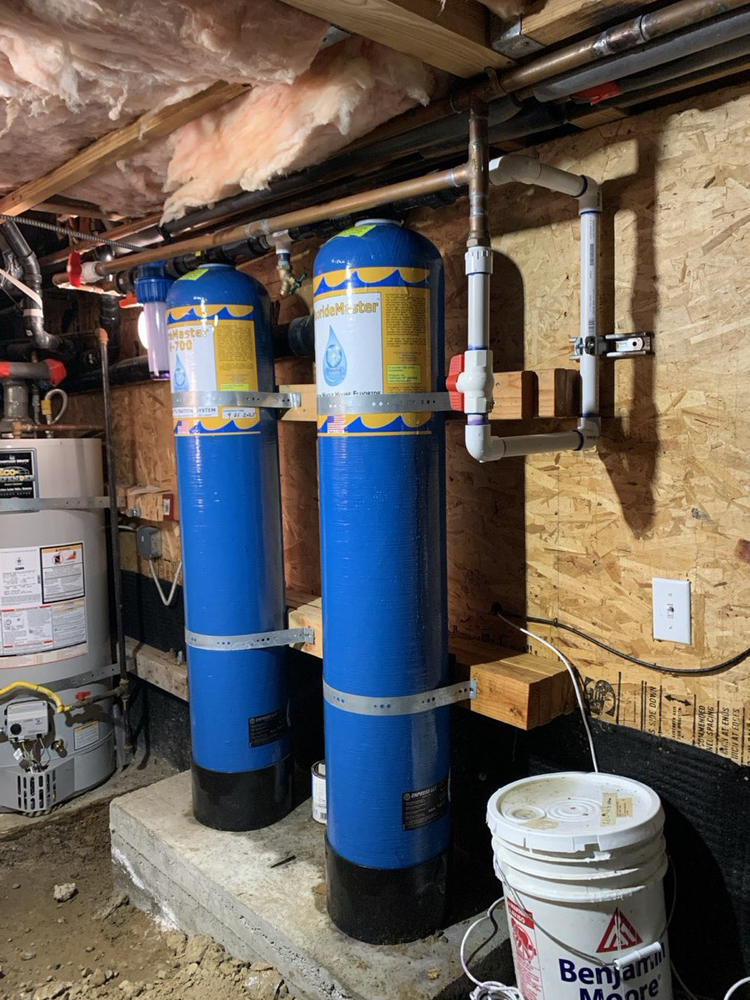

Water Fixtures
Water Fixture Repair & Installation
From a dripping faucet to a full bathroom update, fixtures are the part of your plumbing you use every day. When they leak, stick, or wear out, it affects both your comfort and your water bill.
We provide professional repair and installation services for a wide range of water fixtures, combining careful workmanship with attention to detail. From minor repairs to full replacements, we ensure each fixture is installed correctly, operates smoothly, and meets current plumbing standards.
Our services include
- Faucet repair and installation (kitchen, bathroom, laundry)
- Shower valve and trim installation or replacement
- Toilet repair, replacement, and new installation
- Garbage disposal installation and replacement
- Fixture leak repair and performance adjustments
- Water filter & softener installation

Quality Work, Long-Term Reliability
We take the time to ensure proper fit, secure connections, and clean finishing — so your fixtures not only work reliably but also look great in your space. Our approach focuses on long-term performance, not quick fixes: we use quality parts and proven installation methods to help prevent leaks, improve efficiency, and extend the life of your fixtures. Whether you're updating a single fixture or completing part of a remodel, we provide clear recommendations and dependable service you can trust.



Local &
Service-Oriented
Honest,
Upfront Pricing
Clear
Communication
24/7
Availability
Frequently Asked Questions
-
Yes — we're happy to install homeowner-supplied faucets, toilets, disposals, and fixtures. We'll flag any fit or code concerns before we start so there are no surprises.
-
Persistent drips usually mean a worn cartridge, valve seat, or supply issue rather than just a washer. We diagnose the real cause so the repair lasts, instead of returning in a few weeks.
-
Yes. We install whole-house water filtration and softener systems, integrated cleanly into your main line with proper bypass and code-compliant connections.
Proudly Serving the East Bay
Ready to fix the problem?
Talk to a real plumber now — no phone trees, no callbacks.
Call (510) 502-7843